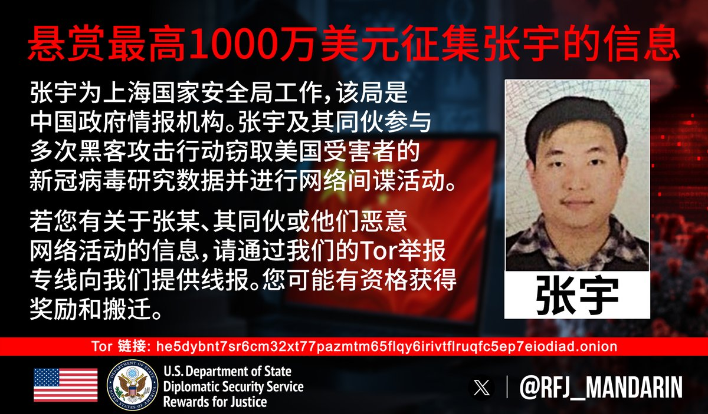

许白
@xubai_01
RT @RFJ_Mandarin: 黑客张宇及其同伙窃取了美国机构宝贵的科研成果并对美国进行网络间谍活动。
有张宇或他非法活动的消息吗？请提供线报。
https://t.co/LfmuFFyu47

Rewards for Justice 中文
@RFJ_Mandarin
黑客张宇及其同伙窃取了美国机构宝贵的科研成果并对美国进行网络间谍活动。
有张宇或他非法活动的消息吗？请提供线报。
https://t.co/LfmuFFyu47 https://t.co/yYlQdMI4pq